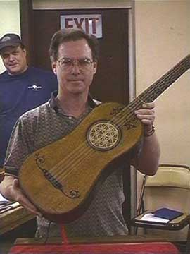

Guitar: A Brief History
The guitar, as we know it today, has a rich and complex history that dates back to ancient times. The earliest forms of stringed instruments resembling guitars are believed to have originated in ancient civilizations. However, The modern guitar began to take shape during the 15th century in spain. Early guitars had four courses, Meaning each course consisted of two strings tuned to the same pitch, similar to the concept of a lute, which was more popular during this time. These early guitars were often referred to as “vihuelas” and were played in a similar manner to the lute.
 The 16th century, guitars evolved, and by the 17th century, the number of strings increased to six, as seen in the classical guitars of today. The instrument continued to be refined over time, with improvements in construction, materials, and design. The transition from the traditional spanish guitar to what we know as the modern classical guitar was a slow process, But by the 19th century, the shape and size of the guitar had become standardized. Notably, spanish luthier antonio torres is credited With significantly influencing the modern guitar's design during the 1850s by increasing its size and improving its internal bracing, which enhanced its resonance and volume. The guitar became immensely popular during the 19th and 20th centuries. It gained recognition not only as a classical instrument but also in various genres of popular music, such as folk, rock, and blues. The electric guitar, which was developed in the 1930s, revolutionized music and gave rise to new genres such as rock and roll and heavy metal. Iconic musicians like jimi hendrix, eric clapton, and eddie van halen helped establish the guitar as one of the most influential instruments in modern music. Believe it or not, the guitar’s evolution is over 400 years old! The earliest guitars were constructed from wood, with intricate carvings and designs. They were often made by hand, and only a few talented artisans knew the craft. Today, guitars are crafted from a variety of materials, including wood, plastic, and metal. While the guitar's construction has changed over time, its timeless appeal and versatility in music continue to captivate musicians worldwide. Throughout history, the guitar has not only been an instrument for entertainment, but it has also played a significant role in cultural movements. In the 1960s, guitars became an essential symbol in the counterculture movement, with artists like bob dylan and the beatles using their guitars as a form of self-expression and social commentary. In more recent years, the guitar has remained a staple of popular music, constantly evolving and adapting to new trends and technologies. In conclusion, the guitar is a symbol of artistic expression and creativity. Whether it's the warm tones of a classical guitar, the raw energy of an electric guitar, or the unique sound of an acoustic guitar, it has proven to be an enduring instrument with a history as dynamic as the music it produces.